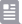

 <ion-tabs>
  <ion-tab-bar slot="bottom">
    <ion-tab-button  (click)="navigate('home')">
      <ion-icon name="home-outline"></ion-icon>
      <ion-label [class]="!activeHome? 'text-sm font-medium font-Lato': 'text-project-green text-sm font-medium font-Lato'">Home</ion-label>
    </ion-tab-button>

    <ion-tab-button  (click)="navigate('web')">
      <svg width="24" height="24" viewBox="0 0 24 24" fill="none" stroke="" xmlns="http://www.w3.org/2000/svg" >
        <path d="M12 2.25C6.61547 2.25 2.25 6.61547 2.25 12C2.25 17.3845 6.61547 21.75 12 21.75C17.3845 21.75 21.75 17.3845 21.75 12C21.75 6.61547 17.3845 2.25 12 2.25Z" stroke="#9B9BA4" stroke-width="2.0625" stroke-miterlimit="10"/>
        <path d="M12.0002 2.25C9.27813 2.25 6.71875 6.61547 6.71875 12C6.71875 17.3845 9.27813 21.75 12.0002 21.75C14.7222 21.75 17.2816 17.3845 17.2816 12C17.2816 6.61547 14.7222 2.25 12.0002 2.25Z" stroke="#9B9BA4" stroke-width="2.0625" stroke-miterlimit="10"/>
        <path d="M5.5 5.68738C7.2925 6.96003 9.54906 7.71894 12.0002 7.71894C14.4512 7.71894 16.7078 6.96003 18.5003 5.68738M18.5003 18.3127C16.7078 17.04 14.4512 16.2811 12.0002 16.2811C9.54906 16.2811 7.2925 17.04 5.5 18.3127" stroke="#9B9BA4" stroke-width="2.0625" stroke-linecap="round" stroke-linejoin="round"/>
        <path d="M12 2.25V21.75M21.75 12H2.25" stroke="#9B9BA4" stroke-width="2.0625" stroke-miterlimit="10"/>
        </svg>

      <ion-label [class]="!activeWeb? 'text-sm font-medium font-Lato': 'text-project-green text-sm font-medium font-Lato'">Web</ion-label>
    </ion-tab-button>
    <ion-tab-button  (click)="navigate('dwr')">
      
        <ion-label [class]="!activeDWR? 'text-sm font-medium font-Lato': 'text-project-green text-sm font-medium font-Lato'">DWR's</ion-label>
    </ion-tab-button>
    <ion-tab-button  (click)="navigate('message')">
      
       <ion-label [class]="!activeMessage? 'text-sm font-medium font-Lato': 'text-project-green text-sm font-medium font-Lato'">Message</ion-label>
    </ion-tab-button>
    <ion-tab-button  (click)="navigate('profile')">
      
       <ion-label [class]="!activeProfile? 'text-sm font-medium font-Lato': 'text-project-green text-sm font-medium font-Lato'">Profile</ion-label>
    </ion-tab-button>
  </ion-tab-bar>
</ion-tabs>
